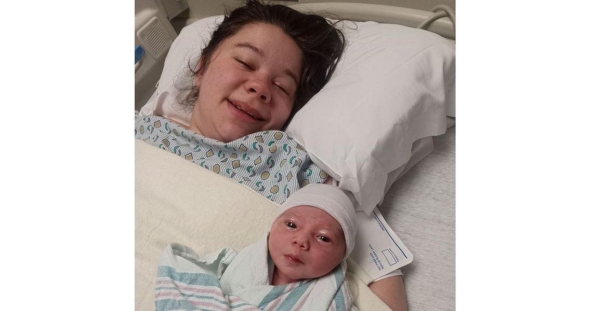

Timeline photos
LOOK AT THAT LITTLE BABY!
I only know 2 things: That's our friend Aubrey. And that's her new baby.
Aubrey is the first homeless person I've worked with that decided to choose adoption. So I've never really thought about the process much until now.
But what a beautiful gift adoption is. It's the ultimate form of giving.
A mom is giving her child an opportunity for a better life than she can give right now. And she's giving a family the opportunity to have a baby that they likely weren't able to have any other way.
And of course, it's heartbreaking to give your baby to another family.
So it becomes this grand love story.
Thank you all SO much for caring for Aubrey during this journey. And thank you @[100074004634333:2048:Aubrey] for being so mature and brave and strong.
I love you all.